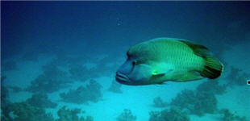

Le napoléon, qui est également appelé labre géant ou «Mara» en Polynésie, est l'un des plus grands poissons de récifs. A cause de ses origines très anciennes, c'est un véritable fossile vivant.
|  |
|
Où vit-il ? Il fréquente les massifs de coraux du Pacifique et de l'océan Indien, dans des eaux généralement peu profondes.
Combien en reste-il aujourd'hui ? Il resterait 320 000 poissons dans les eaux indonésiennes aujourd'hui, ce qui représente environ 3 à 4 poissons au km².
Un mets apprécié : Denrée rare et coûteuse, ce poisson exotique est très recherché dans les restaurants asiatiques et on estime que sa population a diminué de près de 90%. Ce poisson peut vivre une trentaine d'années. Sa lenteur de développement en fait une espèce naturellement rare. Il possède une dentition impressionnante, et ses mâchoires peuvent se vendre jusqu'à 40 000 euros et sa chair jusqu'à 150 dollars le kilo.
A savoir : Le napoléon est hermaphrodite. Il naît femelle et se transforme au cours de sa vie en mâle, mais ce processus est encore mal expliqué. Très curieux, ce poisson s'approche naturellement des plongeurs.